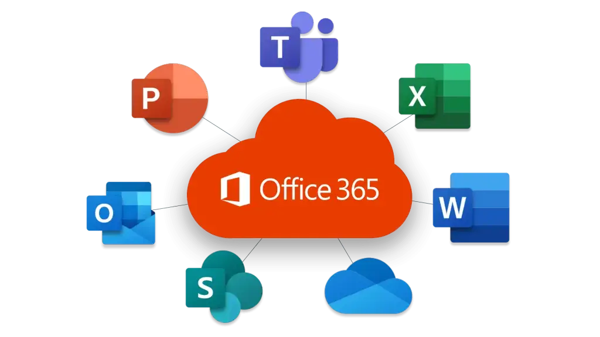
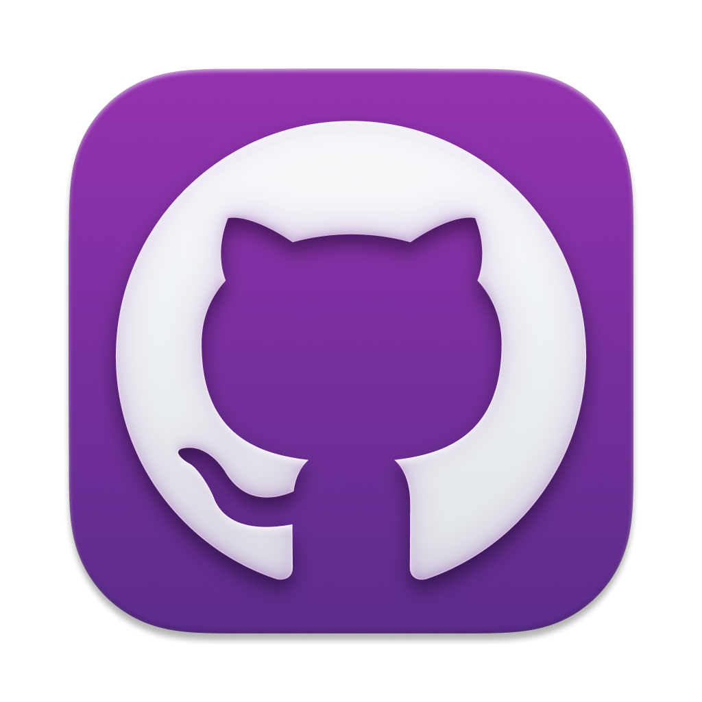

Welke Softwares gebruiken we?

Office 365
Office 365 is iets dat we regelmatig gebruiken om schoolwerk te maken, op te maken en zelfs presentaties te maken. Office 365 omvat voor ons software als Word, Excel en PowerPoint. We gebruiken deze programma's bijna elke dag, dus we hebben een licentie gekregen van onze school om deze belangrijk softwares te gebruiken.
Microsoft Teams
Microsoft Teams is ook een onderdeel van Office 365, maar dit gebruiken we niet om werk te doen, maar om te communiceren, met andere klasgenoten en ook met enkele van onze docenten. We hebben ook groepen waar we wat werk toegewezen krijgen of waar we het werk dat we hebben afgemaakt, zodat andere klasgenoten in dezelfde groep het kunnen zien. Teams is dus over het algemeen een zeer nuttige software die we ook dagelijks gebruiken.

Visual Studio Code
Visual Studio Code is onze codeersoftware, dit is de software die we gebruiken om al onze codering en programmering uit te voeren, we hebben deze ook gebruikt bij het maken van deze website. Omdat wij de opleiding Software Development volgen is dit een essentieel stukje software voor ons schoolwerk en altijd zeer nuttig.

Figma
Figma is onze ontwerpsoftware, dit is de software die we gebruiken om het ontwerp voor onze websites te maken, evenals hoe we het gaan maken en hoeveel pagina's het gaat hebben. Dit is allemaal gemaakt in Figma, tot nu toe hebben we in Figma zijkaarten, wireframes en mockups gemaakt.
Github
GitHub is onze software voor het opslaan van gedeelde code. Hier slaan we alle code- en coderingsopdrachten op die we hebben uitgevoerd. We maken de code en publiceren deze vervolgens op GitHub, zodat onze andere klasgenoten die aan de code werken dat ook kunnen doen hebben ook toegang tot de code en kunnen deze wijzigen of gebruiken. Hier bewaren we ook onze opdrachten, zodat ze door de docenten kunnen worden gecontroleerd.

Github Desktop app
GitHub Desktop App is ook een versie van de vorige Github uitgelegd maar dit keer als app op onze laptop om het makkelijker te maken om direct aan onze laptopbestanden te koppelen om op een makkelijkere manier bestanden voor de website aan te kunnen passen en te wijzigen. Dit is ook wat we hebben gebruikt om deze website te maken.